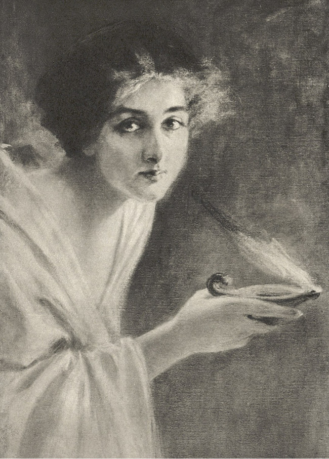

XXI
Každá krůpěj krve se zachvěla v mladém patriciovi, když spatřil Lygii. Zapomněl na davy, na starce, na vlastní údiv nad těmi nepochopitelnými věcmi, viděl před sebou jen ji jedinou. Konečně tedy po mnohém úsilí, po dlouhých dnech nepokoje, rozvratu, zármutku opět ji našel! Po prvé v životě se přesvědčil, že se radost může vrhnouti na prsa jako divá zvěř a stlačiti je až do ztráty dechu. On, jenž se dosud domníval, že „Štěstěna“ má jaksi za povinnost, aby hověla všem jeho přáním, teď sotva věřil vlastním očím a vlastnímu štěstí. Kdyby nebylo té nedůvěry, jeho vznětlivá povaha bývala by jej mohla strhnouti k nějakému nerozvážnému kroku, ale chtěl se dříve přesvědčiti, není-li to pokračování oněch zázraků, jimiž měl hlavu přeplněnu, a není-li to sen. Ale nebylo pochybností: viděl Lygii a dělila jej od ní vzdálenost sotva několika kroků. Stála v plném světle, a tak se tedy mohl opájeti pohledem na ni, pokud sám chtěl. Kápě se jí svezla s hlavy, takže si zcuchala vlasy; ústa měla pootevřena, oči zvednuty k apoštolovi, tvář pohrouženu v poslouchání a plnou nadšení. V plášti ze tmavé vlny byla oblečena jako dívka z lidu, Vinitius však nikdy jí neviděl krásnější a přes všechen zmatek, jaký v něm povstal, překvapila jej, srovnával-li její téměř otrocký šat s ušlechtilostí té rozkošné, patricijské hlavy. Láska jím proletěla jako plamen, nesmírná, promíšená jakýmsi zvláštním pocitem touhy, zbožňování, úcty i vášně. Cítil rozkoš, jakou mu působil pouhý pohled na ni, opájel se jí jako oživující vodou po dlouhé žízni. Stojíc u obrovského Lyga, připadala mu menší, než byla dříve, skoro jako dítě; také zpozoroval, že zeštíhlela. Její pleť byla opravdu průsvitná; činila na něho dojem květiny a duše. Ale tím jen více toužil, aby měl u sebe tu bytost, tak rozdílnou od žen, které viděl nebo které míval u sebe na východě a v Římě. Cítil, že by za ni dal ty všecky a s nimi i Řím i svět nádavkem.

Ale nebylo pochybnosti: viděl Lygii…
Byl by se všecek zahleděl a úplně zapomněl na sebe, kdyby nebylo Chilona, který jej tahal za cíp u pláště, ze strachu, aby neprovedl čehosi, co by je mohlo vydati v nebezpečí. Křesťané zatím se začali modliti a zpívati. Za chvíli zahučelo „Maranatha“1 a pak začal veliký apoštol křtíti vodou z fontány ty, které předváděli presbyteři jako připravené ku přijetí křtu. Vinitiovi se zdálo, že ta noc nebude míti nikdy konce. Chtěl nyní co nejrychleji sledovati Lygii a zmocniti se jí cestou nebo v jejím příbytku.
Konečně začali někteří opouštěti hřbitov. Tehdy zašeptal Chilon:
„Vyjděme, pane, před bránu, protože jsme nesňali kápí a lidé se na nás dívají.“
Bylo tomu tak opravdu. Mezitím, co všichni za slov apoštolových obnažili hlavy, aby lépe slyšeli, oni nenásledovali jejich příkladu. Proto se Chilonova rada zdála rozumnou. Stojíce u brány, mohli pozorovati všechny vycházející; Ursa pak nebylo těžko rozeznati po vzrůstu a postavě.
„Pojďme za nimi!“ řekl Chilon. „Uvidíme, do jakého domu vcházejí, a zítra či vlastně ještě dnes obstoupíš, pane, všecky vchody do domu otroky a zmocníš se jí.“
„Ne!“ řekl Vinitius.
„Co chceš učiniti, pane?“
„Vejdeme za ní do domu a chopíme se jí okamžitě. Přece ses k tomu uvolil, Krotone?“
„Tak jest!“ řekl lanista. „A podrobím se ti jako otrok, pane, nezlomím-li vaz tomu buvolovi, který ji hlídá.“
Ale Chilon začal je od toho odrazovati a zapřísahati při všech bozích, aby toho nečinili. Kroto měl přece býti přibrán k ochraně pro případ, kdyby byli poznáni, ne však, aby dívku unesl. Zmocní-li se jí pouze ve dvou, sami se vydají v nebezpečí smrti, ba co více: může jim býti vyrvána z rukou a pak se skryje na jiném místě nebo opustí Řím. A co udělají? Proč nejednati najisto, k čemu vydávati sebezkáze a celý podnik nejistému osudu?
Vinitius přesto, že s největším přemáháním se ovládal, aby hned na hřbitově nestrhl Lygii v objetí, přece jen cítil, že Řek má pravdu, a byl by snad popřál sluchu jeho radám, kdyby nebylo Krotona, jemuž běželo o odměnu.
„Rozkaž, pane, tomu starému ťulpasovi, aby byl zticha,“ řekl, „anebo mi dovol, abych jej udeřil pěstí do hlavy! Jednou v Buxentu2, kam byl mne přivedl na hry Lucius Saturninus, vrhlo se na mne v hospodě sedm opilých gladiátorů a žádný z nich neodešel s celými žebry. Neříkám, abychom se dívky zmocnili teď, uprostřed davu, protože by nám mohli házet kamení na nohy, ale až bude jednou doma, uchvátím ti ji a odnesu, kam ti bude libo.“
Vinitius měl radost, naslouchaje těm slovům, i odvětil:
„Tak se stane, u Herkula! Zítra bychom třebas nenašli jí náhodou doma, kdežto kdybychom strhli poplach mezi nimi, zcela jistě by ji odstranili.“
„Ten Lyg mi připadá hrozným silákem!“ zabědoval Chilon.
„Nebudeš ty mít za povinnost, abys mu držel ruce!“ odpověděl Kroto.
Musili však čekati ještě dlouho a kohouti začali kokrhati na úsvit, nežli spatřili Ursa, vycházejícího z brány, a s ním Lygii. Provázelo je několik osob jiných. Chilonovi se zdálo, že rozeznává mezi nimi velikého apoštola, vedle něho kráčel druhý stařec, daleko nižší vzrůstem, dvě nemladé ženy a pachole, které svítilo lucernou. Za tím hloučkem ubíral se dav, čítající asi dvě stě osob. Vinitius, Chilon a Kroto vmísili se do toho davu.
„Ano, pane,“ řekl Chilon, „tvá dívka jest pod mocnou ochranou. Je s ní on, veliký apoštol, neboť hleď, kterak lidé před ním vpředu klekají!“
Lidé opravdu klekali, ale Vinitius se na ně nedíval. Neztráceje Lygie z očí ani na chvíli, myslil pouze na její únos, a přivyknuv v bojích úskokům všeho druhu, spřádal si v duchu s vojenskou přesností celý plán únosu. Cítil, že krok, jehož se odvažoval, byl smělý, ale věděl dobře, že smělé výpady se obyčejně potkávají se zdarem.
Nicméně cesta byla dlouhá, a proto chvílemi přemýšlel o propastech, jaké utvořilo mezi ním a Lygií to podivné učení, které vyznávala. Rozuměl nyní všemu, co se stalo v minulosti, a rozuměl, proč se to stalo. Byl na to dosti prozíravým. Neznal až dosud Lygie. Spatřoval v ní dívku nade všecky rozkošnou, ke které zahořely jeho smysly; nyní však poznal, že to učení vytvářelo z ní jakousi bytost, různící se od jiných žen, a že naděje, aby také ji přivábily smysly, vášeň, bohatství, rozkoš, jest čirým klamem. Pochopil konečně to, čemu nerozuměli oba, on ani Petronius, že totiž ono nové učení vštěpovalo do duše cosi neznámého tomuto světu, v němž žil, a že Lygie, byť jej i milovala, ničeho neobětuje kvůli němu ze svých křesťanských pravd; že existuje-li pro ni rozkoš, tedy naprosto rozdílná od té, po které bažil on i Petronius i Caesarův dvůr i celý Řím. Každá jiná z žen, které znal, mohla se státi jeho milenkou – tato křesťanka mohla býti pouze obětí.
A mysle na to, zakoušel žhoucí bolest i hněv, cítil však zároveň, že ten hněv jest bezmocný. Unésti Lygii připadalo mu věcí možnou, tím si byl skoro jist, ale rovněž byl si jist, že proti tomu učení on sám, jeho statečnost, jeho moc, nejsou ničím a že nebude si s Lygií věděti rady. Ten římský vojenský tribun, přesvědčen, že ta síla meče i pěsti, která ovládla svět, vždy jej bude ovládati, spatřil po prvé v životě, že mimo tu sílu může býti ještě cosi jiného, a proto si s úžasem dával otázku: Co je to?
A nedovedl si jasně odpověděti, hlavou mu proletovaly jen obrazy hřbitova, shromážděného zástupu a Lygie, jež všecka byla pohroužena duší v poslouchání slov starce, vypravujícího o mukách, smrti a zmrtvýchvstání Boha-člověka, který vykoupil svět a sliboval mu štěstí na druhém břehu Styxu3.
Když pak o tom uvažoval, v jeho hlavě vyvstával zmatek.
Ale z toho víru vyburcovalo jej bědování Chilona, který začal naříkati na svůj osud. Byl přece srozuměn, aby opět byla nalezena Lygie, kterou také s nebezpečím života vyhledal a ukázal na ni. Ale čeho více přejí si od něho? Což se uvolil, že ji unese? A kdo také mohl čehosi podobného žádati na mrzákovi, zbaveném dvou prstů, na člověku starém, oddaném hloubání, nauce a ctnosti? Co se stane, utrpí-li pán tak ctihodný, jako jest Vinitius, při únosu dívky nějakou pohromu? Bohové jsou ovšem povinni bdíti nad vyvolenci, ale což se mnohdy nestávají takové věci, jako by se bohové bavili hrou, místo aby se dívali, co se děje na světě? Štěstěna, jak známo, má zavázané oči, a proto nevidí ani ve dne, neřkuli v noci. Dojde-li k něčemu, hodí-li ten lygijský medvěd po šlechetném Vinitiovi kamenem od žernovů, sudem vína nebo ještě hůře – sudem vody –, kdo zaručí, že na ubohého Chilona místo odměny nepadne odpovědnost? Také on, ubohý mudřec, připoutal se ke šlechetnému Vinitiovi jako Aristoteles k Alexandrovi Makedonskému; kdyby mu aspoň šlechetný Vinitius dal ten měšec, který před jeho očima si vetkl za pás, vycházeje z domu, bylo by za co přivolati okamžitě pomoc nebo nakloniti si samé křesťany, kdyby nastalo nebezpečí. Ó, proč nechtějí poslechnouti rad starcových, které jsou diktovány rozvahou a zkušeností?
Vinitius, uslyšev to, vyňal měšec od pasu a hodil jej Chilonovi mezi prsty.
„Zde máš a mlč!“
Řek ucítil, že měšec byl neobyčejně těžký, a dostal odvahu.
„Všecka má naděje spočívá v tom,“ řekl, „že Herkules nebo Theseus4 vykonali práce ještě obtížnější, a čím jest můj osobní, nejbližší přítel Kroto, ne-li Herkulem? Tebe pak, ctihodný pane, nenazvu polobohem, poněvadž jsi celým bohem a nezapomeneš ani nadále na chudého a věrného služebníka, jehož potřeby musíš občas ukájeti, protože on sám, jakmile se jednou zahloubá do knih, nestará se naprosto o nic… Několik těch sáhů zahrady a domek, třebas i s nejmenším portykem pro ochlazení v létě, bylo by čímsi důstojným takového dárce. Zatím budu se obdivovati zpovzdálí vašim hrdinským činům, vzývat Joviše, aby vám přál zdaru, a strhne-li se něco, způsobím takový povyk, že se probudí půl Říma a přijde vám na pomoc. Jaká to špatná a nerovná cesta! Olej mi v lucerně dohořel, a kdyby Kroto, jenž je šlechetný zrovna tak jako silný, chtěl mne vzít do náručí a donést až ke bráně, přesvědčil by se předem, je-li snadno unést dívku, a za druhé, zachoval by se jako Aeneas5, a konečně by si naklonil všecky poctivější bohy tou měrou, že bych o výsledek podniku byl úplně kliden.“
„Raději ponesu zdechlinu ovce, scíplé před měsícem na prašivinu,“ odvětil lanista, „ale dáš-li mi onen měšec, který ti hodil ctihodný tribun, ponesu tě až ke bráně.“
„Kéž by sis vymkl prst u nohy!“ odpověděl Řek. „Tedy tolik jsi toho pochytil z učení onoho velebného starce, který uváděl chudobu a soucit jako dvě nejpřednější vlastnosti…? Což ti jasně nepřikázal, abys mne miloval? Pozoruji, že z tebe neudělám ani ledabylého křesťana a že spíše slunce pronikne zdmi mamertinského vězení6 nežli pravda tvou hroší hlavou.“
Kroto, jenž měl sílu zvířecí, naproti tomu však byl bez jakýchkoli lidských citů, pravil:
„Neboj se, křesťanem se nestanu! Nechci přijít o kousek chleba!“
„Ano, ale kdybys měl aspoň počáteční vědomosti o filosofii, věděl bys, že zlato je marností!“
„Pojď ke mně se svou filosofií a já ti dám jednu ránu hlavou do břicha, a pak uvidíme, kdo to vyhraje!“
„Totéž mohl říci vůl Aristotelovi,“ odvětil Chilon.
Na světě se šeřilo. Svit obestřel bledou barvou cimbuří hradeb. Stromy u cesty, domy a tu i tam rozptýlené náhrobky začaly se vynořovati ze stínu. Cesta již nebyla úplně prázdná. Překupníci zeleniny spěchali k otevření bran, vedouce osly a mezky, nesoucí náklad se zeleninou; leckde skřípěly vozy, na nichž byla vezena zvěřina. Na cestě i po obou stranách ležela u samé země lehká mlha, ohlašující krásné počasí. Lidé, pozorovaní ze vzdálenosti poněkud větší, vypadali v té mlze jako duchové. Vinitius upřeně se díval na štíhlou postavu Lygyinu, která dle toho, jak se úsvit stupňoval, byla čím dále tím stříbřitější.
„Pane,“ řekl Chilon, „křivdil bych ti, kdybych prorokoval, že tvá štědrost bude jednou u konce, ale teď, když jsi mi zaplatil, nemůžeš mne mít v podezření, že bych mluvil jen ve svůj prospěch. Nuže, radím ti ještě jednou, aby dovědě se, ve kterém domě bydlí božská Lygie, vrátil ses domů pro otroky a lektiku a neposlouchal tohoto sloního rypáku, Krotona, který jen proto se sám uvoluje unést dívku, aby vymačkal tvůj měšec jako pytlíček s tvarohem.“
„Máš u mne schovánu ránu pěstí mezi lopatky – to znamená, že bude po tobě!“ ozval se Kroto.
„Máš u mne schovánu diotu7 kefalonského vína – to znamená, že budu zdráv!“ odvětil Řek.
Vinitius neodpověděl ničeho, protože se přiblížili ke bráně, u které překvapila jejich oči zvláštní podívaná. Dva vojáci totiž poklekli, když přecházel apoštol mimo, on pak chvíli spočinul rukama na jejich železných přílbách a pak učinil nad nimi znamení kříže. Mladému patriciovi dosud nikdy nepřišlo na mysl, že již i mezi vojáky mohou býti křesťané, a s údivem si pomyslil, že jako v hořícím městě zachvacuje požár domy stále nové, tak ono učení každým dnem přibírá patrně stále nové duše a šíří se nad všecky lidské představy. Zamyslil se nad tím též vzhledem k Lygii, neboť se přesvědčil, že kdyby bývala chtěla prchnouti z města, našli by se muži ze stráže, kteří sami by jí byli umožnili tajemný odchod. Proto také blahořečil v tom okamžiku všem bohům, že se tak nestalo.
Dorazivše za nezastavená místa, která se prostírala za hradbami, hloučky křesťanů začaly se rozcházeti. Nyní bylo nutno sledovati Lygii dále a opatrněji, aby nebyla obrácena pozornost na ty, kdož ji sledovali. Chilon proto začal naříkati na rány a píchání v nohou a zůstával stále více pozadu, čemuž se Vinitius nevzpíral, mysle si, že zbabělý a neduživý Řek nebude mu teď již nic platen. Byl by mu dokonce dovolil, aby šel po svých; nicméně šlechetného mudrce zdržovala od toho prozíravost, přitom však pudila jej patrně i zvědavost, protože kráčel bez ustání za nimi, chvílemi dokonce se i přibližoval, opakuje své předešlé rady, jakož i připojuje domněnky, že stařec, provázející apoštola, mohl by býti Glaukem, kdyby nebyl příliš nízkého vzrůstu.
Nicméně šli ještě dlouho až na Zatibří a slunce již již mělo vzejíti, když tu hlouček, v němž byla Lygie, se rozdělil. Apoštol, stará žena a pachole dali se podél řeky a proti proudu, kdežto stařec nižšího vzrůstu, Ursus a Lygie vklouzli do úzkého vicus, a popošedše ještě asi sto kroků, vešli do síně domu, ve kterém byly dva krámy, jeden s olivami, druhý ptáčníkův.
Chilon, který se ubíral nějakých padesát kroků za Vinitiem a Krotonem, hned se zastavil jako přikován, a přitisknuv se ke zdi, začal na ně sykati, aby se k němu vrátili.
Oni tak učinili, neboť bylo záhodno, aby se uradili.
„Jdi,“ pravil k němu Vinitius, „a podívej se, nemá-li ten dům východ z druhé strany do jiné ulice!“
Chilon přesto, že si dříve naříkal na rány v nohou, odkvapil tak živě, jako by na kotnících měl křidélka Merkurova, a za chvíli se vrátil.
„Ne,“ pravil, „východ jest jeden.“
Pak sepjal ruce.
„U Joviše, Apollona, Vesty, Kybely, Isidy a Osiria, u Mitry, Baala a všech bohů východu i západu, zapřísahám tě, pane, vzdej se toho úmyslu…! Poslechni mne…!“
Leč náhle ustal, jelikož zpozoroval, že tvář Vinitiova zbledla rozčilením, jeho zraky pak se leskly jako oči vlka. Stačilo podívati se na něho, aby možno bylo porozuměti, že nic na světě ho neodvrátí od onoho předsevzetí. Kroto začal nabírati dech do svých herkulovských prsou a kolébati svou nevyvinutou hlavou na obě strany, jak to dělávají medvědi v kleci. Ostatně na jeho tváři nebylo znáti nejmenšího nepokoje.
„Vejdu první!“ řekl.
„Půjdeš za mnou!“ řekl Vinitius velitelským hlasem.
A za chvíli zmizeli oba ve tmavé síni.
Chilon odskočil k nároží nejbližší uličky a jal se vykukovati ze zákoutí, očekávaje, co se stane.
Aramejské slovo znamenající „Pán náš“. ↩︎
Starořímské město v jižní Itálii. ↩︎
V řeckém bájesloví řeka v podsvětí. ↩︎
Po Heraklovi nejznamenitější starořecký hrdina. ↩︎
Syn trojského hrdiny Anchisa a bohyně Afrodity, praotec římského národa. ↩︎
Stálo na severovýchodní straně starořímského Fora. ↩︎
Dvouuchá nádoba. ↩︎